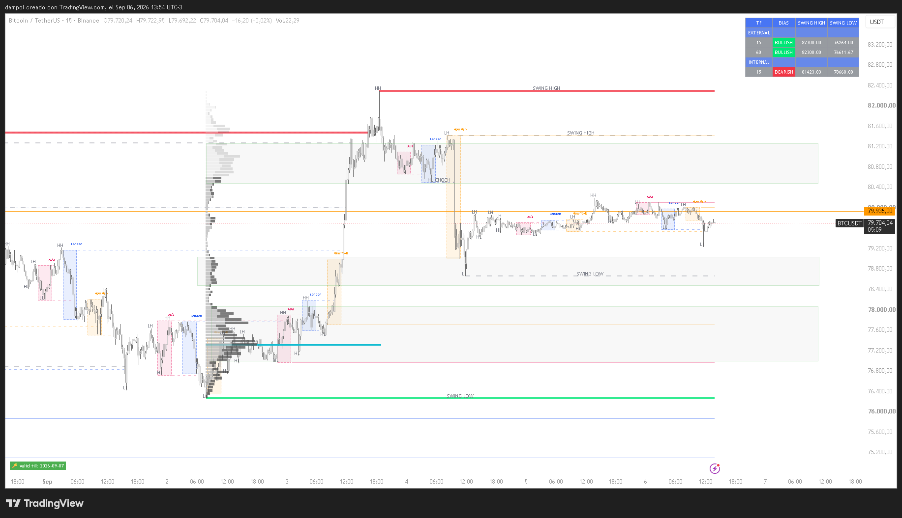

Professional market structure trading system. 7-step course-aligned engine with external/internal swing logic, MTF dashboard, and session range tracking.

BTCUSDT H1 — External and internal swing levels with BOS/CHOCH labels, session range tracking, and info dashboard
Full SMC implementation — swing highs/lows, external vs internal logic, BOS/CHOCH, MTF dashboard, and session ranges. All in one Pine Script v6 indicator.
Complete market structure engine faithful to the SMC course model: basic structure → CHOCH → body-close confirmation → external vs internal → 3-candle pullback → box re-anchor → multi-timeframe.
COREOnly external swings (box bounds) drive trend bias. Internal swings are in-range noise and do NOT collapse the box — pure course STEP 4 logic.
SMC PUREBreak of Structure and Change of Character automatically labeled on external box breaks. Body-close only — wicks through a level = nothing (course STEP 3).
Multi-timeframe info table showing TF, BIAS, SWING HIGH, and SWING LOW for both EXTERNAL and INTERNAL structure on the chart timeframe and a HTF (default 240).
Asia (22:00–01:00), London (03:00–06:00), NY (08:00–11:00) UTC-3. Horizontal lines extend until mitigated. Highs/lows tracked per session with color-coded display.
Every confirmed swing gets a permanent HH/HL/LH/LL label in gray, positioned left of originBar. Never hidden — always visible to track market structure across timeframes.
Swing highs/lows act as liquidity pools. Price sweeps above prior swing high (buy-side liquidity) or below prior swing low (sell-side liquidity) before reversing. The indicator marks these structural levels where stops and liquidity cluster.
SMC KEYSmart Money refers to institutional capital — banks, hedge funds, and professional traders who move markets. Unlike retail traders, Smart Money operates with deep liquidity, accumulates positions gradually, and triggers market moves. SMC is the framework for tracking their footprint on the chart.
Institutional money that controls the market. Smart Money creates liquidity pools at swing highs/lows, sweeps retail stops, then drives price in the opposite direction. SMC Structure V7 maps these institutional footprints in real time — every swing high/low, every box break, every BOS/CHOCH is a signal of what Smart Money is doing.
The fuel of Smart Money. Buy-side liquidity sits above swing highs (stop losses of short sellers). Sell-side liquidity sits below swing lows (stop losses of long buyers). Smart Money sweeps these zones to fill large orders before reversing. The indicator's external box bounds directly identify the key liquidity levels in play.
The sequence of HH/HL (uptrend) and LH/LL (downtrend) defines who controls the market. BOS confirms trend continuation — Smart Money is pushing in the same direction. CHOCH signals a potential shift — Smart Money may be reversing. The indicator auto-labels both so you read structure at a glance.
The last candle before a strong move in the opposite direction — where Smart Money placed its orders. Our engine identifies the external box bounds which function as the key Order Block zones. When price returns to these levels, Smart Money often reacts there.
An imbalance zone where price moved too fast, leaving an unpriced gap. Smart Money leaves FVGs behind as signatures of aggressive accumulation or distribution. Price tends to return to fill these gaps — they act as magnets. The 3-candle pullback rule helps identify when FVGs are likely to hold.
A sharp move beyond a swing high/low to trigger stop losses and capture liquidity. Smart Money needs liquidity to fill large positions — they push price to grab it, then reverse. A sweep above external high (buy-side grab) or below external low (sell-side grab) often precedes a strong directional move in the opposite direction.
KEY PATTERNReal-time table shows external and internal structure state — bias, swing levels, and HTF comparison
The complete trade setup framework: direction, spot, confirmation
Every swing high and swing low processed through the complete course model
Swing highs/lows give directional bias: LH+LL = bearish, HH+HL = bullish. 3-candle pullback rule applied to EVERY swing.
A trend shifts when the OPPOSITE swing extreme is broken. Change of Character signals a potential reversal.
A shift is confirmed only by a BODY-CLOSE beyond a live box bound. Wick through a level = nothing.
Only EXTERNAL swings (the box bounds) move the trend. In-range swings are INTERNAL noise and must NOT collapse the box.
3 candles that each break the prior candle in the OPPOSING direction to the trend. Non-consecutive, BODY-CLOSE only, wicks ignored.
On a confirmed box break, the box re-anchors to the current confirmed swing pivot — never a whole-window extreme scan.
Higher TF bias takes precedence. Range-anchored MTF rows in the info dashboard for comparison. HTF default: 240.
Built for traders who want institutional-grade market structure analysis
Faithful to the Complete Market Structure Trading Course model. No deviations, no interpretations.
Separate external box bounds (trend-biasing) from internal swing noise. Clean structure reading.
Compare chart TF vs HTF structure state side-by-side in one compact table.
Asia, London, NY ranges with horizontal lines — know which session is driving price action.
All signals on confirmed bars only. What you see is what happened — no lookahead bias.
Modern arrays, loops, and structs. Max 500 lines/labels. Optimized for speed and reliability.
Join the TwoRuleTrader community. Get the SMC Structure V7 indicator, the trading framework, and full support.